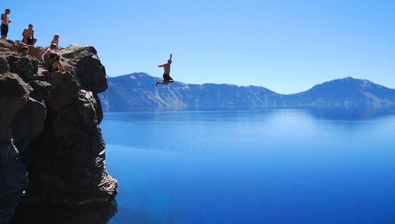
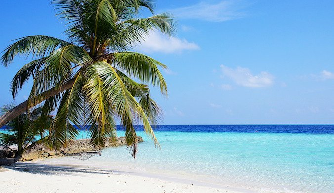
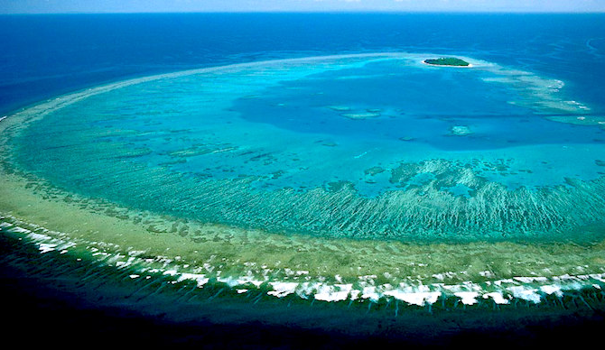
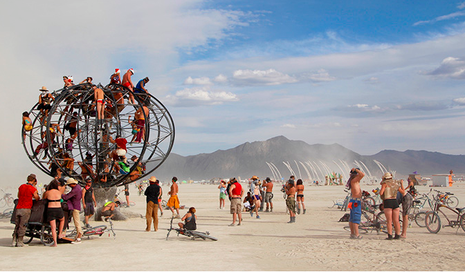
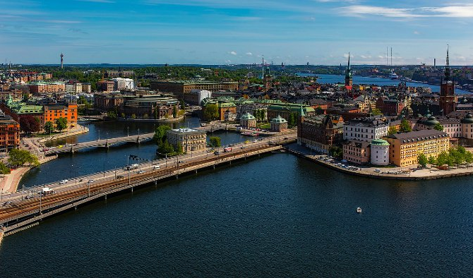
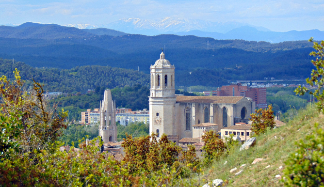
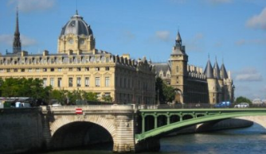

Why it`s Never the Perfect Time to Travel
Every year, we all ponder exotic locations and amazing adventures. We think of the trips we will take and the places we will meet.
And then we abandon those dreams as rapidly as we thought them up.We think of all the reasons why we can’t go. Why today isn’t perfect and we just have too many things to do.
Something comes up and our plans are put off until tomorrow as we wait for “the right time.”When we have more money, more time off, when things aren’t so crazy – then we can travel. We just need the stars to align a little more.
But, here is a secret: it will never be the right time to travel.

Best Tropical Islands In The World
Tropical islands.
As soon as I think of travel, it’s not long before my mind drifts to white sand beaches, azure blue water, and palm trees in tropical locales.
When most people think of paradise, chances are they’re thinking of tropical islands is far-flung corners of the world. Lounging with a good book,
drinking from coconuts, soaking up the rays. Does it get any better than that?
Tropical islands are that peaceful escape where the days drift by, the problems of the world melt away, and time slows down.
They are a sanctuary.I spent a month living on an island in Thailand and it remains one of the best months of my entire life.
I’m an avid beach lover.After over a decade of travel and countless hours staring out into the ocean, I’ve done the “hard” research so you don’t have to!
If you’re looking for a tropical island to go on your next vacation, here are a list of my favorites!
How to Travel Around Africa in 2019
Africa is a continent known for its exotic animal encounters, dramatic landscapes, world-class beaches, and rich cultural traditions.
It’s a continent few explore in depth, yet one that always seems to captivate anyone who visits.
Stretching over 30 million square kilometers and home to over 1.2 billion people, Africa is a vastly diverse
landscape — both geographically and culturally. Most world maps end up distorting the continents true size,
leading many to underestimate its size (contrary to what a Mercator map shows, Africa is 14 times larger than Greenland!).
But how do you get around while you’re there?To help you plan your next adventure around Africa,
I’ve compiled a list of the best ways to get around — no matter your budget!

Diving the Great Barrier Reef
The Great Barrier Reef is one of the best dive sites in the world.
Running up and down Queensland’s east coast in Australia, there are tons of fish to see as well as beautiful, vibrant coral.
I was excited to use my newly acquired dive skills and dive the Great Barrier Reef while
I was in Cairns. You always hear how great it is and I wanted to see it first hand.You can expect to see clownfish (like Nemo!),
groupers, butterflyfish, and maybe even some turtles (there are actually 6 species of turtle living around the reef), sharks, and more when you go diving there.

Breaking Out of Your Comfort Zone
One of the things travel forces you to confront your judgments and perception of people.
Last year, I came across some bohemian art folks on the web. They liked my site, their art was cool,
and they were very down-to-earth people.We developed a steady online friendship, but their lifestyle is totally different
from mine.There is nothing too extraordinary about my social life. Overall, my social habits are pretty mainstream.
I watch movies, go to the gym, watch Netflix, work, and go to yuppie cocktail bars.But these folks went to alternative
festivals like Burning Man and Lightning in a Bottle. They are really into erotic art. They have a lot of piercings and tattoos.
Some of them live in modern communes. They are vegan. (I can’t live without bacon.)

The Cost of Traveling Sweden
Sweden isn’t the cheapest country in the world to visit. Its high prices keep many people from visiting, which is a shame,
because this is one of the world’s most beautiful and interesting countries. That’s a bold statement, but
I’ve been to Sweden twice before and am constantly amazed at the beautiful landscape and cities.
Moreover, the people (besides making the rest of the world look ugly) are incredibly friendly to visitors.
I’ve come to realize that while the country is expensive, there are plenty of ways to save money and visit on a budget.

The Saturday City: Girona
I had the pleasure of visiting Girona, located in the Costa Brava region of Spain just north of Barcelona,
when it acted as host city for this year’s European travel blogger conference. This region of Spain is not as popular
as Costa del Sol or islands like Ibiza, which is good and bad. Good because there aren’t that many tourists here and it’s
relatively quiet. Bad because this region is beautiful, picturesque, and filled with gorgeous coastlines that
I wish they did advertise more so I would have visited sooner. I can’t believe I’ve been coming to
Spain for six years and never made it here! Costa Brava has become one of my favorite spots in Spain and Girona one of my
favorite cities.
Forty-Eight Hours in Oslo
Most budget travelers skip Norway because it’s an expensive country to visit. The taxes are high,
a lot of things are imported, and the currency is very strong. During my time here, I’ve found very few ways around
this fact and have learned that “cheap” can be an extremely relative term.However, flight connections can allow for a
brief stopover in this incredibly beautiful city. So while Oslo isn’t cheap, you can spend two days here doing a lot
without blowing your budget:
Day 1: Vigeland Park and Frogner,Viking Museum,Folk Museum,Fram Museum,Kon-Tiki Museum,The Holocaust Center,City Hall.
Day 2: Akershus Castle,Resistance Museum,Armed Forces Museum,Harbor Cruise,The Royal Palace and Park,National Gallery.

Paris My Favorite City in Europe
Paris. Poets, artists, playwrights, writers, journalists, statesmen, and more have all written about it. All came to
Paris and walked away in love.It’s hard not to fall in love with Paris. It’s a magical place, and I can see why so many
flock here. Paris exudes culture, sophistication, and style.And, like millions before me, I too fell in love with the city.
I remember the exact moment. It was about midnight, and I had only been in Paris for two hours. I was meeting friends for a
night on the town, and I hadn’t seen much of the city yet since I arrived late. But the second I got out of the metro and
stared at the Arc de Triomphe and marveled at the Champs-Élysées, I fell in love. Paris was it—the highlight of my time in Europe.